This comeback is what brought up the field of deep learning
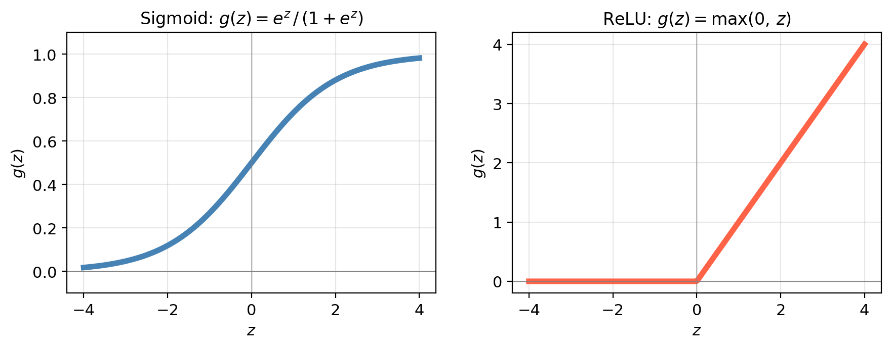
EDS 232
Lesson 11
Neural Networks
In this lesson
Neural network applications
A brief history
This comeback is what brought up the field of deep learning
Applications
Deep neural networks are at the heart of many contemporary technological advancements:
Large language models: used for text and code generation (ChatGPT, Claude). These are neural networks with likely trillions of parameters
Image recognition: identifying objects in images, with applications from autonomous vehicles to medical imaging
Many environmental applications: anywhere regression, classification, text analysis, or image processing can be applied.
Single-layer neural network
Single-layer Neural Network
Given a vector of features \(\mathbf{X} = (X_1, \ldots, X_p)\) and a response variable \(Y\), our goal is to learn a function \(F(\mathbf{X})\) to predict \(Y\): same goal as throughout the course.
For now, \(Y\) is quantitative, so we will think first about the regression scenario.
A single-layer neural network (a network with one hidden layer) has three core components:
Input layer: the \(p\) features \(X_1, \ldots, X_p\) form the input layer
Hidden layer: made up of \(K\) neurons
Output layer: the final model output \(F(\mathbf{X})\)
In the diagram, \(p=4\) and \(K=5\).
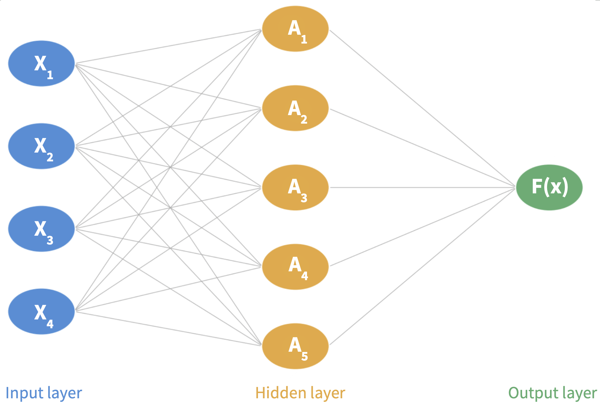
The prediction process
Step 1: Input layer. An observation \((X_1, \ldots, X_p)\) is fed through the network left to right.
Step 2: Hidden layer. Each neuron computes an activation \(A_k\) in two steps:
Form a linear combination using a bias \(w_{k0}\) and weights \(w_{k1}, \ldots, w_{kp}\): \[w_{k0} + w_{k1} X_1 + \cdots + w_{kp} X_p.\]
Pass through an activation function \(g(z)\):
\[A_k = g(w_{k0} + w_{k1} X_1 + \cdots + w_{kp} X_p).\]
Step 3: Output layer. Final prediction is a linear combination of all \(K\) activations:
\[F(X_1, \ldots, X_p) = \beta_0 + \beta_1 A_1 + \cdots + \beta_K A_K\]
using \(K+1\) new parameters \(\beta_0, \ldots, \beta_K\).
Step 1: Input layer
An observation \((X_1, \ldots, X_p)\) is fed through the network left to right.
.
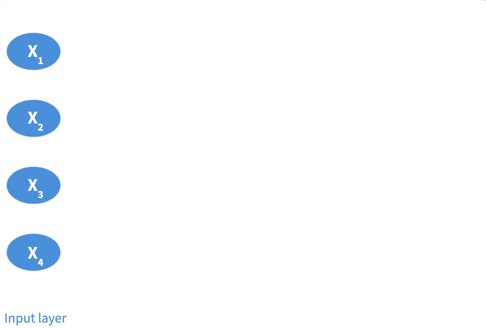
Step 2: Activations at each neuron
At each neuron, form a linear combination of the features \(X_i\) using a bias and weights, and pass it through an activation function.
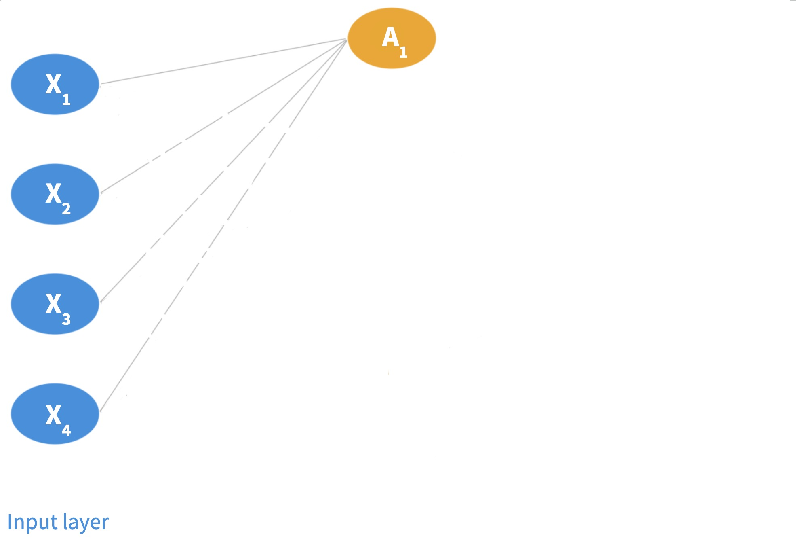
Step 2: Activations at each neuron
At each neuron, form a linear combination of the features \(X_i\) using a bias and weights, and pass it through an activation function. Each neuron in the layer gives an activation.
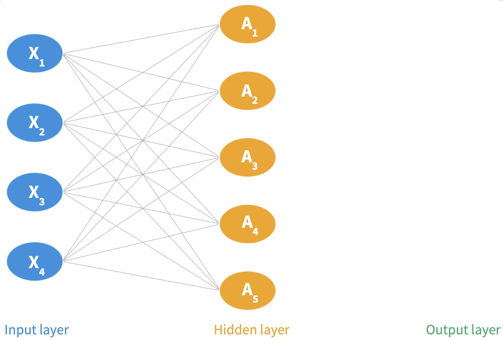
Step 3: Output layer
Final prediction is a linear combination of all \(K\) activations.
.
Fitting a neural network
Fitting a neural network means estimating all weights \(w_{kj}\), biases \(w_{k0}\), and output coefficients \(\beta_0, \ldots, \beta_K\) from the training data.
To find these parameters we look for the parameters that minimize a loss function that measures prediction error:
This is done via stochastic gradient descent + backpropagation.
We’ll treat this as a black box.
(See ISLP §10.7 for details on the fitting algorithm)
What about the activation function?
The activation function introduces the nonlinearity that gives neural networks their modeling power. Two of the most common choices:
Sigmoid: \(\displaystyle g(z) = \frac{e^z}{1 + e^z}\): squashes any input to \((0, 1)\)
ReLU (Rectified Linear Unit): \(g(z) = \max(0, z)\): zero for negative inputs, identity for positive (most commonly used)

Multilayer neural networks
Multilayer neural networks
In practice, neural networks have more than one hidden layer and many neurons per layer (often hundreds). This is what makes them deep networks. As the network grows deeper, it can represent increasingly complex functions.
The multilayer network now has:
Input layer: the \(p\) features \(X_1, \ldots, X_p\) form the input layer
Multiple hidden layer: made up of a constant or decreasing number of neurons
Output layer: the final model output \(F(\mathbf{X})\)
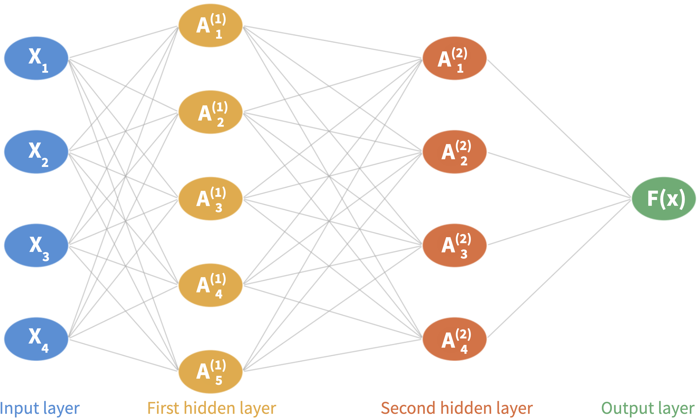
The prediction process
Step 1: Input layer. An observation \((X_1, \ldots, X_p)\) is fed through the network left to right.
Step 2: First hidden layer. There are \(K_1\) neurons in it. Each neuron computes an activation \(A^{(1)}_k\) using the fatures as input (same as before):
\[A_k^{(1)} = g\!\left(w_{k0}^{(1)} + \sum_{j=1}^{p} w_{kj}^{(1)} X_j\right)\]
Step 3: Second hidden layer There are \(K_2\) neurons in it. Each neuron takes the previous layer’s activations as input to compute its activations:
\[A_k^{(2)} = g\!\left(w_{k0}^{(2)} + \sum_{j=1}^{K_1} w_{kj}^{(2)} A_j^{(1)}\right)\]
Step 4: Output layer. Final prediction is a linear combination of all \(K\) activations:
\[F(X_1, \ldots, X_p) = \beta_0 + \beta_1 A^{(2)}_1 + \cdots + \beta_{K_2} A^{(2)}_{K_2}\]
Step 1: Input layer
An observation \((X_1, \ldots, X_p)\) is fed through the network left to right.
.
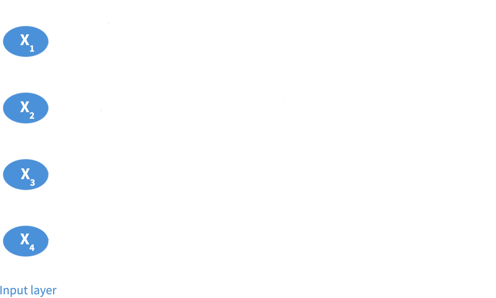
Step 2: Activations in the first layer
Each neuron in the first layer computes an activation \(A^{(1)}_k\) using the fatures as input (same as before).
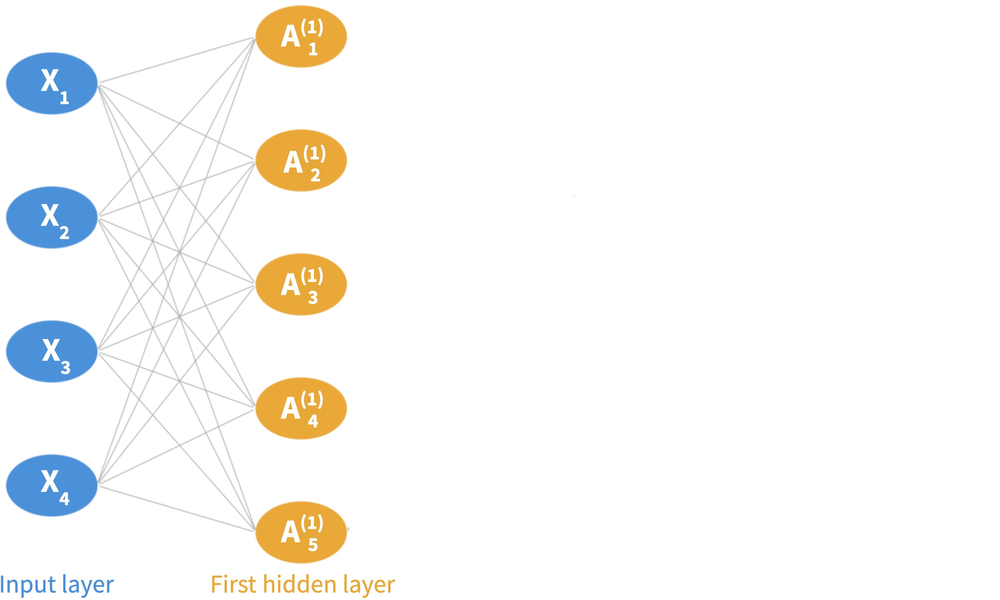
Step 3: Activations in the second layer
Each neuron in the second layer takes the first layer’s activations as input to compute its activations \(A^{(2)}_k\).
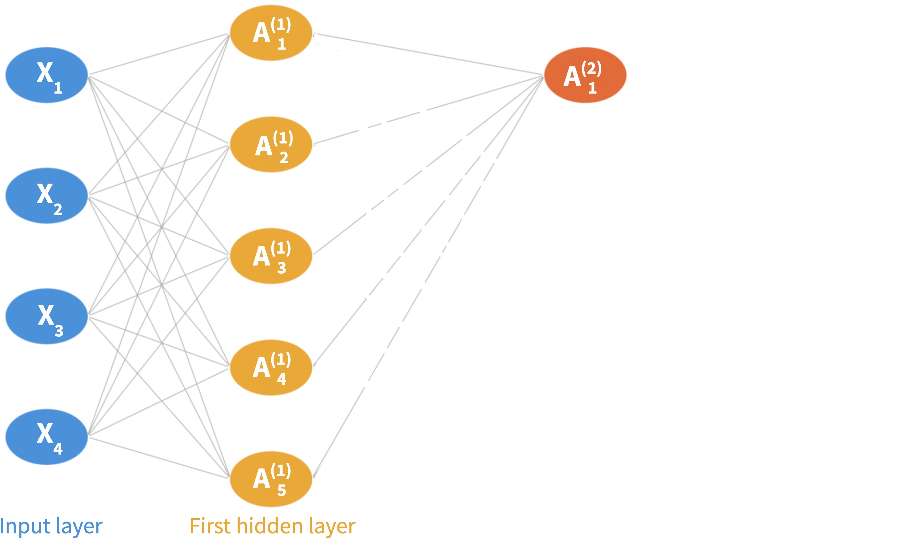
Step 3: Activations in the second layer
Each neuron in the second layer takes the first layer’s activations as input to compute its activations \(A^{(2)}_k\).
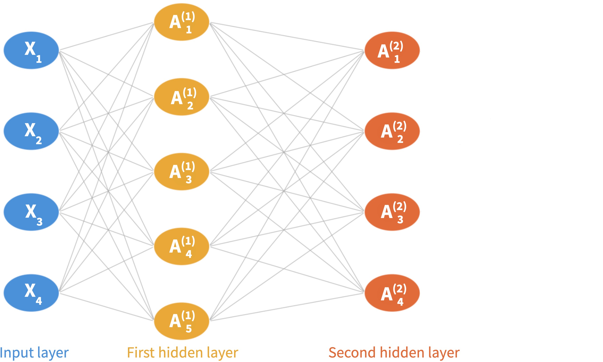
Step 4: Output layer
Final prediction is a linear combination of all activations in the last layer.
.
Classification
For classification with \(C\) classes, the output layer produces \(C\) raw scores \(Z_1, \ldots, Z_C\) (one per class), then applies the softmax function to convert them to the probability of belonging to a given class.
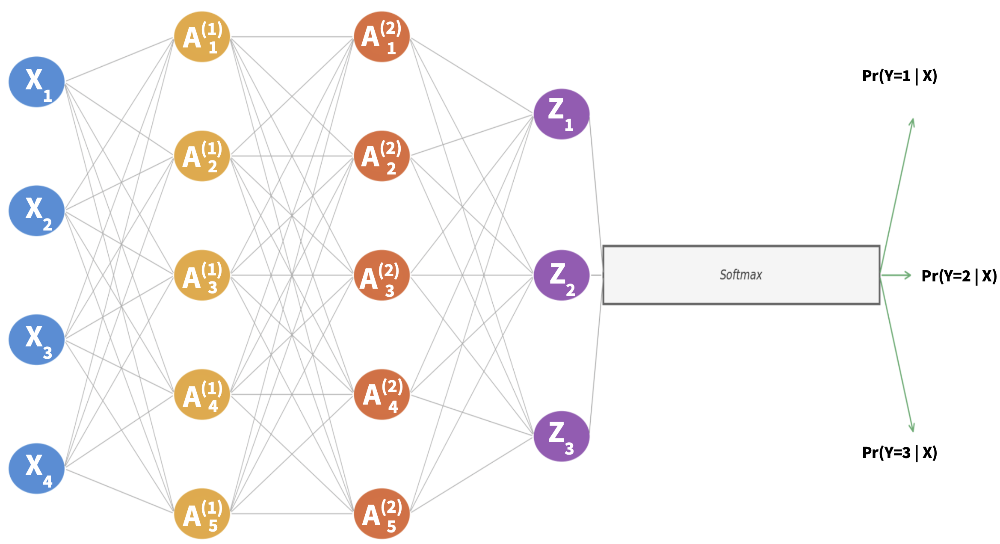
Depth and representations
Early layers tend to capture simple, low-level patterns.
Deeper layers combine them into higher-level, more concrete features.
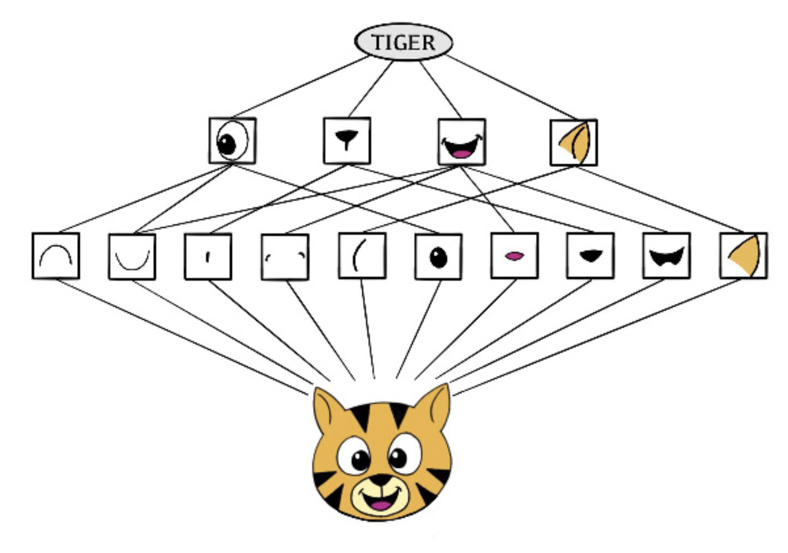
Depth and representations
This resource visually explains how the layers and activations capture features:
How do the activations in the first layer relate to the activations in the second layer?
Explain the motivation between the using multiple layers of neurons to recognize patterns in the input data.
How do the weights capture specific patterns in the input data?
The video uses an example of classifying hand-written digits. What would be the difference between classifying these images of handwritten images, and a color image with RGB bands?
Convolutional neural networks
Convolutional neural networks
The networks we have studied treat the input as a flat vector of features, where each pixel goes through the network independntly wihtout using the spatial structure when the input is an image.
CNNs are designed specifically for image data. Intuitively:
In environmental science CNN applications come usually from image classification and analysis of remotely sensed data.
CNN architecture
A complete CNN combines:
Adapted from What is the Convolutional Neural Network Architecture?
Convolution filters
A convolution filter (kernel) is a small matrix that acts as a feature detector.
We slide the filter across the image, computing a convolution product at each position.
Filters are learned from training data, the network discovers the most useful features automatically.
Pooling layer
A pooling layer reduces the spatial size of feature maps making the fatures more compact.
Generally use max pooling: divide into non-overlapping blocks, retain only the maximum value per block.
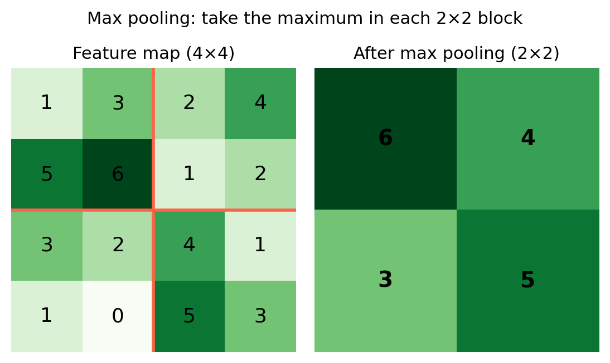
CNN architecture
Adapted from What is the Convolutional Neural Network Architecture?